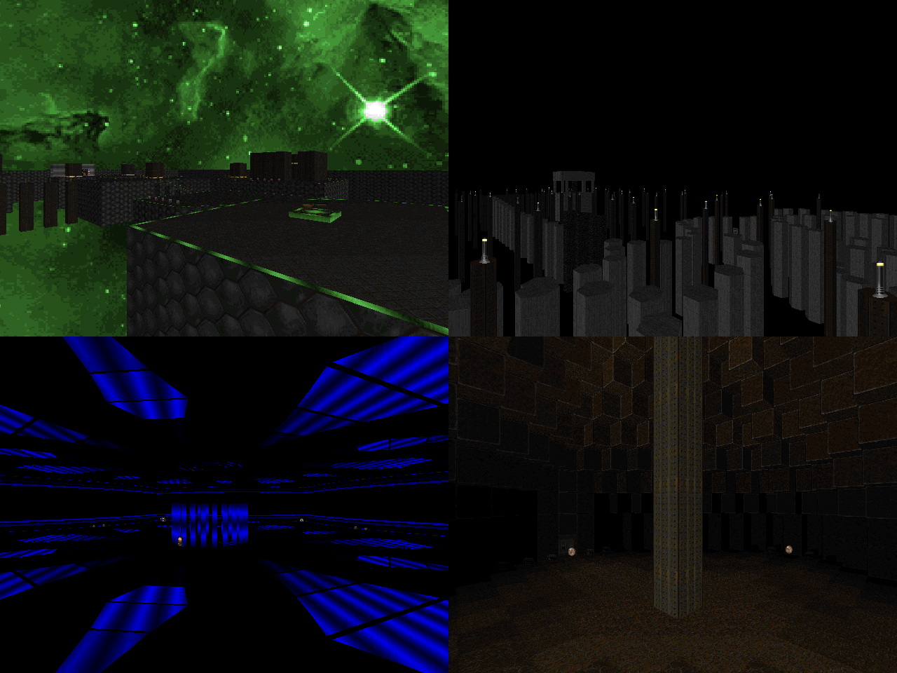

DOWNLOAD LINKS



| Year | 2022 |
| IWAD | Doom II |
| Source port | Boom-compatible |
| Game mode(s) | Single-player |
| Map(s) | MAP01-16, MAP31 |
Scorpion is a collection of 17 Boom-compatible speedmaps that I put together in a week. Most maps in Scorpion lean heavily towards the slaughter style of gameplay, with many of them employing different gimmicks to provide their own, occasionally experimental spin to the combat encounters. The maps also have distinct themes, ranging from vanilla-style marble temples to monochromatic art pieces with light shows.